Expand all Collapse all The single biggest rule a new pilot gets wrong is how Optimus Prime converts upon death. When Optimus Prime, Hero dies, his triggered ability returns him to the battlefield converted as Optimus Prime, Autobot Leader (the Vehicle). On opponents' turns, Living Metal is not active, meaning he is a noncreature artifact Vehicle—completely immune to creature board wipes like Supreme Verdict and Blasphemous Act. When your turn begins, Living Metal awakens him into a 6/8 Trample attacker that bolsters your board and converts straight back into Hero mode after combat. The commander engine and Autobots team 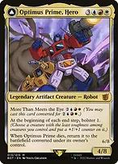Optimus Prime, Hero // Optimus Prime, Autobot LeaderCast converted for {2}{U}{R}{W} via More Than Meets the Eye. Bolsters on EACH player's end step (four +1/+1 counters per turn cycle across the table) and recurs converted to Autobot Leader when destroyed. 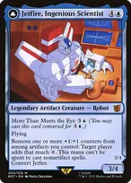Jetfire, Ingenious Scientist // Jetfire, Air GuardianConverts +1/+1 counters into colorless mana to cast high-impact artifacts or activate abilities, then adapts counters back onto itself when converted. 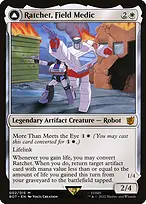Ratchet, Field Medic // Ratchet, Rescue RacerLifelink attacker that converts upon lifegain to reanimate key artifacts directly from your graveyard to the battlefield. 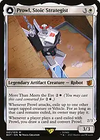Prowl, Stoic Strategist // Prowl, Pursuit VehicleExiles troublesome tapped opposing blockers or threats on attack, drawing you cards and converting back when opponents replay them. 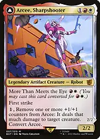Arcee, Sharpshooter // Arcee, Acrobatic CoupeMachine-guns opposing utility creatures and commanders by removing +1/+1 counters, reloading counters whenever you cast targeted spells. 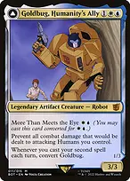Goldbug, Humanity's Ally // Goldbug, Scrappy ScoutProtects attacking Human artificers and prevents your spells from being countered when in vehicle mode. 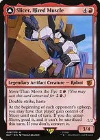Slicer, Hired Muscle // Slicer, High-Speed AntagonistDeploys for {2}{R} to rotate around the table dealing devastating goaded commander damage to opponents while your Autobot core develops. Counter engines and resource multipliers 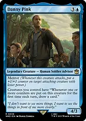Danny PinkTurns Optimus Prime's bolster triggers into a torrent of card advantage, drawing up to five cards per turn cycle whenever counters are placed on creatures. 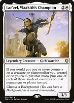Lae'zel, Vlaakith's ChampionDoubles down on every counter trigger, adding an additional counter whenever you place any counter on a permanent or yourself. 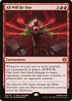All Will Be OneWeaponizes every +1/+1, charge, or loyalty counter placed on your permanents, converting bolster and proliferate into direct damage to any target. 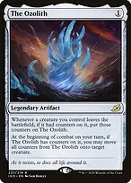The OzolithStores all counters from dying or phased creatures and redistributes them onto your biggest threat at the start of combat. 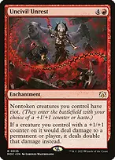Uncivil UnrestGrants riot to nontoken creatures and doubles all damage dealt by any creature with a +1/+1 counter on it. 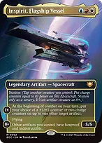Inspirit, Flagship VesselStations using creature power; at 8+ counters, grants all other artifacts you control hexproof and indestructible. 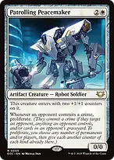Patrolling PeacemakerProliferates your entire board whenever any opponent commits a crime. 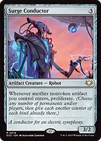Surge ConductorTriggers proliferate whenever another nontoken artifact enters your battlefield. 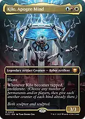Kilo, Apogee MindProliferates all counters on the table whenever it attacks or taps. 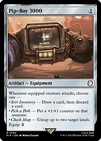Pip-Boy 3000Flexible equipment that buffs with counters, untaps lands to hold up interaction, or filters cards. 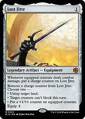Lost JitteAccumulates charge counters to untap lands, pump creatures, or remove blockers. 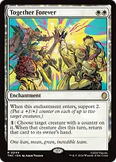Together ForeverSupports counters onto two creatures and pays {1} to return any modified creature to your hand when it dies. Artifact army and mana development 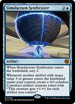Simulacrum SynthesizerTriggers whenever artifacts with mana value 3 or greater enter, creating massive Construct tokens that scale with your total artifact count. 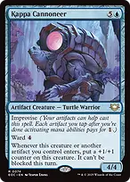Kappa CannoneerWard {4} and unblockable beater that accumulates +1/+1 counters with every artifact drop. 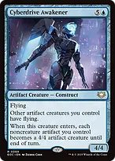Cyberdrive AwakenerGives your team flying and turns all noncreature artifacts into 4/4 flying beaters for an alpha strike. 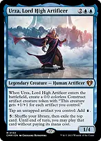Urza, Lord High ArtificerTaps all your noncreature artifacts and Equipment for {U} and spins your library for free spells. 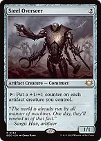Steel OverseerTaps to place a +1/+1 counter across your entire artifact creature army. 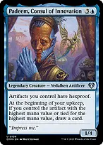Padeem, Consul of InnovationShields your artifacts with hexproof and draws an extra card every upkeep. 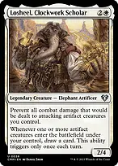Losheel, Clockwork ScholarPrevents combat damage to attacking artifact creatures and draws cards on artifact entries. 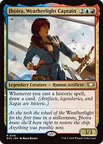Jhoira, Weatherlight CaptainDraws a fresh card whenever you cast any historic spell (artifacts, legendaries, Sagas). 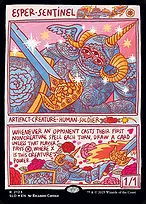Esper SentinelTaxes opponents' noncreature spells, scaling its tax trigger as Optimus bolsters its power. 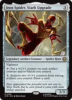Iron Spider, Stark UpgradeTaps to place counters on all artifact creatures and Vehicles, and converts extra counters into card draw. 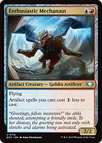Enthusiastic MechanautReduces the mana cost of all artifact spells you cast by {1}. 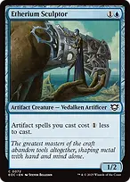Etherium SculptorRedundant cost reducer for your entire artifact curve. 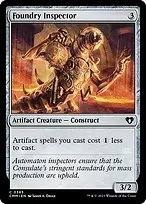Foundry InspectorUniversal artifact cost reduction to chain spells rapidly. Unwinding ClockUntaps all your artifacts on every opponent's turn, allowing multiple uses of Steel Overseer, The One Ring, and mana rocks. The compact finish 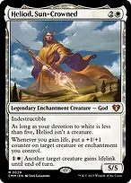+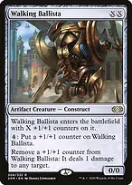Heliod, Sun-Crowned + Walking BallistaInfinite damage combo. Cast Heliod and Walking Ballista, pay {1}{W} with Heliod to grant Walking Ballista lifelink. Remove a counter from Ballista to deal 1 damage to an opponent; lifelink triggers Heliod to put a +1/+1 counter back onto Ballista. Repeat to machine-gun the entire table. In accordance with Bracket 3 rules, this two-card combo is reserved for turn 6 or later. Spend early turns establishing your Autobots, bolstering counters, and controlling the board, then assemble the combo to close out the game cleanly. 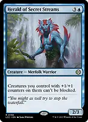Herald of Secret StreamsCombat finisher that renders all creatures with +1/+1 counters unblockable. 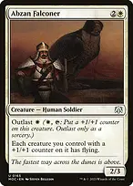Abzan FalconerCombat finisher that gives all creatures with +1/+1 counters flying. Tutors and engine assemblers 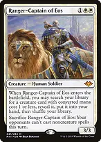→Ranger-Captain of Eos → Walking BallistaTutors the creature half of the infinite combo directly to hand, or grabs Esper Sentinel. Can be sacrificed to silence opponents for a turn. 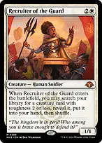→Recruiter of the Guard → Walking BallistaSearches any creature with toughness 2 or less, finding Walking Ballista, Ranger-Captain, or Esper Sentinel. 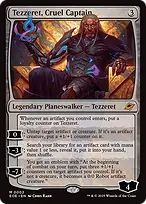→Tezzeret, Cruel Captain → The OzolithMinus 3 searches for any artifact with mana value 1 or less (Walking Ballista, The Ozolith, Sol Ring), while his plus untaps and adds counters. 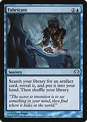→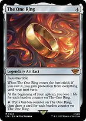Fabricate → The One RingTutors The One Ring for card draw, or finds Walking Ballista to execute the win. →Whir of Invention → Simulacrum SynthesizerImprovised instant-speed tutor that drops any key engine directly onto the battlefield. 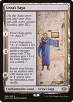→Urza's Saga → The OzolithChapter III fetches a 0 or 1-mana artifact directly into play (The Ozolith, Sol Ring, Lost Jitte, Pip-Boy 3000). 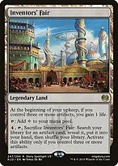→Inventors' Fair → Walking BallistaSacrifices to tutor any artifact card to hand once metalcraft is achieved. 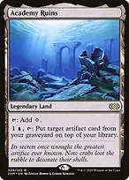→Academy Ruins → Walking BallistaRecurses any milled or countered artifact from graveyard to top of library. Defensive layers and removal 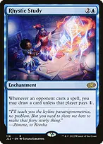Rhystic StudyPremier card advantage engine that punishes opponents for casting spells. 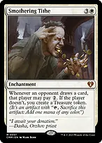Smothering TitheGenerates a flood of Treasure tokens that pump your Constructs and fund big turns. The One RingGrants protection from everything for a turn and draws overwhelming numbers of cards. 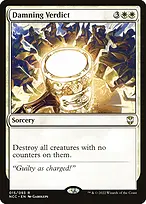Damning VerdictOne-sided sweeper that destroys all creatures without counters, wiping opponents while your modified board survives completely. 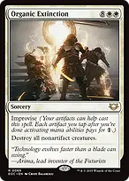Organic ExtinctionImprovised one-sided board wipe that spares your artifact creatures and Autobots. 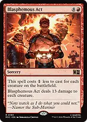Blasphemous ActCheap red board reset when opposing token armies get out of hand. 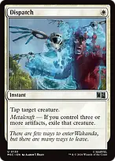DispatchInstant-speed exile for {W} with metalcraft active. Swords to PlowsharesEfficient single-target creature exile. Path to ExileUnconditional creature exile. Dovin's VetoUncounterable hard counter for noncreature spells. CounterspellReliable two-mana countermagic. Deflecting SwatFree redirection spell with Optimus Prime on the battlefield. Boros CharmProtects your entire board with indestructible against opposing sweepers or grants double strike for lethal. Wake the PastMass reanimation that returns all artifacts from your graveyard to the battlefield with haste. Opening hand and sequencing Prioritize hands with three lands and cheap artifact ramp or cost reducers (Sol Ring, Talismans, Etherium Sculptor, Esper Sentinel) to deploy Optimus Prime on turn 3 or 4. Cast Optimus Prime converted for {2}{U}{R}{W} using More Than Meets the Eye. Immediately begin distributing bolster counters onto your utility creatures (Esper Sentinel, Danny Pink, Steel Overseer) on each player's end step. Use turns 4 and 5 to deploy value engines like Simulacrum Synthesizer, Inspirit, or Danny Pink while attacking with Optimus to trigger bolster 2 and convert him back to Hero mode. From turn 6 onward, either alpha-strike through unblockable/flying effects with Herald of Secret Streams or Abzan Falconer, or tutor Heliod and Walking Ballista to finish off the table in one decisive turn.